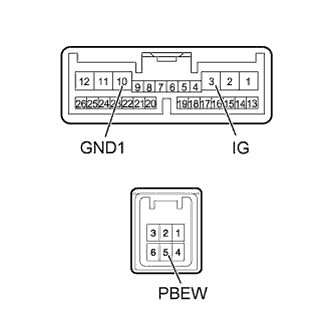

SEAT BELT WARNING SYSTEM > Front Passenger Side Seat Belt Warning Light Malfunction |
| 1.READ VALUE USING INTELLIGENT TESTER (FRONT PASSENGER SIDE BUCKLE SWITCH) |
Check the Data List for proper functioning of the front passenger side seat belt buckle switch (Click here).
| Tester Display | Measurement Item/Range | Normal Condition | Diagnostic Note |
| P-Seatbelt Buckle SW | Front passenger side seat belt buckle signal / ON or OFF | ON: Front passenger side seat belt fastened OFF: Front passenger side seat belt unfastened | -. |
|
| ||||
| OK | |
| 2.PERFORM ACTIVE TEST USING INTELLIGENT TESTER (FRONT PASSENGER SIDE SEAT BELT WARNING LIGHT) |
Operate the intelligent tester according to the display and select Active Test (Click here).
| Tester Display | Test Part | Control Range | Diagnostic Note |
| Front Passenger Side Seat Belt | Front passenger side seat belt warning light | ON/OFF | Confirm that the vehicle is stopped and the engine is idling. |
| Result | Proceed to |
| Front passenger side seat belt warning light condition cannot be switched by Active Test (w/o Navigation System) | A |
| Front passenger side seat belt warning light condition cannot be switched by Active Test (w/ Navigation System) | B |
| Front passenger side seat belt warning light condition can be switched by Active Test | C |
|
| ||||
|
| ||||
| A | |
| 3.INSPECT HEATER CONTROL SWITCH BOARD |
Remove the heater control switch board (Click here).
Apply battery voltage to the heater control switch board.
Check that the front passenger side seat belt warning light comes on.
| Measurement Condition | Specified Condition |
| Battery positive (+) → Terminal 1 (IG+) Battery negative (-) → Terminal 7 (LAPL) | Front passenger side seat belt warning light comes on |
|
| ||||
| OK | |
| 4.CHECK HARNESS AND CONNECTOR (COMBINATION METER - HEATER CONTROL SWITCH BOARD, BATTERY AND BODY GROUND) |
Disconnect the G3 meter connector.
Disconnect the H32 heater control switch board connector.
Measure the resistance and voltage according to the value(s) in the table below.
| Tester Connection | Condition | Specified Condition |
| G3-18 (WRNP) - H32-7 (LAPL) | Always | Below 1 Ω |
| G3-18 (WRNP) - Body ground | Always | 10 kΩ or higher |
| Tester Connection | Switch Condition | Specified Condition |
| H32-1 (IG+) - Body ground | Engine switch on (IG) | 11 to 14 V |
|
| ||||
| OK | ||
| ||
| 5.INSPECT DISPLAY AND NAVIGATION MODULE DISPLAY |
|  |
Remove the display and navigation module display (Click here).
Apply battery voltage to the display and navigation module display.
Check that the front passenger side seat belt warning light comes on.
| Measurement Condition | Specified Condition |
| Battery positive (+) → Terminal 3 (IG) Battery negative (-) → Terminal 5 (PBEW) Battery negative (-) → Terminal 10 (GND1) | Front passenger side seat belt warning light comes on |
|
| ||||
| OK | |
| 6.CHECK HARNESS AND CONNECTOR (COMBINATION METER - DISPLAY AND NAVIGATION MODULE DISPLAY, BATTERY AND BODY GROUND) |
Disconnect the G3 meter connector.
Disconnect the H4 and H8 display connectors.
Measure the resistance and voltage according to the value(s) in the table below.
| Tester Connection | Condition | Specified Condition |
| G3-18 (WRNP) - H8-5 (PBEW) | Always | Below 1 Ω |
| H4-10 (GND1) - Body ground | ||
| G3-18 (WRNP) - Body ground | Always | 10 kΩ or higher |
| Tester Connection | Switch Condition | Specified Condition |
| H4-3 (IG) - Body ground | Engine switch on (IG) | 11 to 14 V |
|
| ||||
| OK | ||
| ||
| 7.INSPECT SEPARATE TYPE FRONT SEAT CUSHION PAD (OCCUPANT DETECTION SENSOR) |
Remove the front seat assembly (Click here).
Measure the resistance according to the value(s) in the table below.
| Tester Connection | Condition | Specified Condition |
| 1 - 3 | More than 147 N (15 kgf, 33.0 lbf) applied to occupant detection sensor | Below 100 Ω |
|
| ||||
| OK | |
| 8.INSPECT FRONT SEAT INNER BELT ASSEMBLY RH |
 |
Remove the front seat inner belt assembly RH (Click here).
Measure the resistance according to the value(s) in the table below.
| Tester Connection | Condition | Specified Condition |
| A-2 - B-1 | Seat belt unfastened | Below 1 Ω |
| Seat belt fastened | 10 kΩ or higher | |
| A-3 - B-3 | Always | Below 1 Ω |
| *1 | Connector A |
| *2 | Connector B |
| *a | Component without harness connected (Front Seat Inner Belt Assembly RH) |
|
| ||||
| OK | |
| 9.CHECK HARNESS AND CONNECTOR (COMBINATION METER - FRONT SEAT INNER BELT RH AND BODY GROUND) |
Disconnect the G3 meter connector.
Disconnect the a16 inner belt connector.
Measure the resistance according to the value(s) in the table below.
| Tester Connection | Condition | Specified Condition |
| G3-12 (P/SB) - a16-3 | Always | Below 1 Ω |
| a16-2 - Body ground | ||
| G3-12 (P/SB) - Body ground | Always | 10 kΩ or higher |
|
| ||||
| OK | ||
| ||